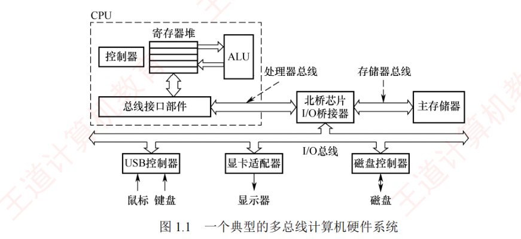
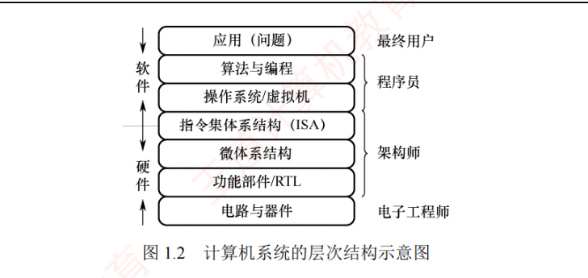
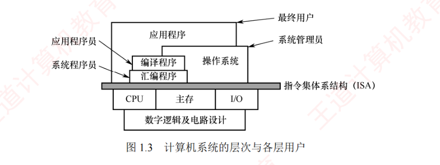
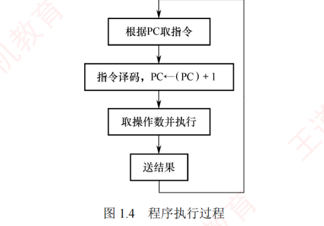
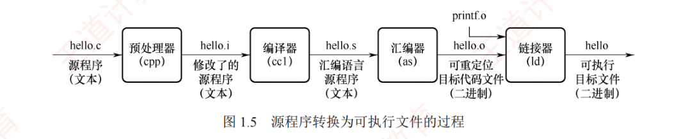

1.2 计算机系统层次结构
这一节回答三个递进的问题：计算机由什么组成（1.2.1～1.2.3）？这些组成如何一层层叠起来（1.2.4～1.2.5）？一个程序到底是怎么跑起来的（1.2.6）？本节是选择题的高频产区，冯·诺依曼机的特点、三种语言的翻译方式、ISA 的定位都要能背能辨。
1.2.1计算机系统的组成
一个完整的计算机系统由硬件与软件组成。硬件指有形的物理装置，即计算机系统中的各类物理部件；软件则是在硬件上运行的程序及其相关的数据与文档。可以把硬件想象成「身体」，软件是「思想」，二者缺一不可。
计算机系统的实际性能，很大程度上取决于软件对硬件资源的利用效率，而该效率的实现依赖于硬件所提供的能力。因此，计算机系统设计必须合理划分软硬件的功能边界。一般而言，对于使用频繁且硬件实现成本较低的功能，宜由硬件实现，以显著提升整体效率。
1.2.2计算机硬件
1. 冯·诺依曼机的基本思想
冯·诺依曼在研究 EDVAC 机时首次提出了「存储程序」的思想，奠定了现代计算机的基本结构。基于这一思想的计算机统称冯·诺依曼机，其主要特点如下：
- 采用「存储程序」的工作方式：将编制好的程序和初始数据预先存入主存储器，计算机启动后能自动、连续地取指并执行，直至程序结束，无须人工干预；
- 硬件系统由运算器、控制器、存储器、输入设备和输出设备五大部件组成；
- 指令和数据在存储器中以相同形式存放，仅凭内容无法区分，但计算机应能识别它们；
- 指令和数据均采用二进制编码表示；
- 指令由操作码和地址码组成，其中操作码指明操作类型，地址码指出操作数的地址。
2. 计算机的功能部件
现代计算机将运算器、控制器和各类寄存器高度集成，形成一块称为中央处理器（Central Processing Unit, CPU）的芯片。完整的计算机硬件系统主要包含以下部件：中央处理器、存储器、输入/输出控制器、外部设备，以及用于协调这些部件协同工作的总线。
（1）中央处理器。CPU 是计算机系统中负责指令执行的核心部件，其传统基本组成为运算器和控制器；在现代计算机架构中，这两部分被系统地组织为数据通路与控制单元。
- 数据通路是执行实际运算的硬件通路，其核心包括算术逻辑单元（ALU）和通用寄存器：ALU 负责完成所有算术与逻辑运算，通用寄存器组则为 ALU 提供操作数并暂存运算结果；此外还包含多路选择器、加法器与通路等组件，用于在各部件间高效传递数据。
- 控制器负责协调整个 CPU 的工作：从存储器中取出指令并译码，随后根据指令含义生成一系列精确的控制信号，指挥数据通路的操作（例如选择寄存器、配置 ALU 功能、启动运算并在正确时序下完成结果写回），从而确保指令有序、高效地执行。
（2）存储器。按功能特性，存储器通常分为内存与外存。现代内存由主存和高速缓存（Cache）组成，但由于 Cache 是后期引入的，传统上「内存」仅指主存。在冯·诺依曼结构中，主存作为核心的工作存储器，用于存放正在执行的程序和数据。外存则包含两类：一类用于与主存交换数据的磁盘、固态硬盘等，另一类用于长期备份的海量存储设备（如磁带、光盘等）。
（3）外部设备和设备控制器。外部设备简称外设，也称 I/O 设备（I/O 是 Input/Output 的缩写）。外设通常由物理功能部件（如打印机、鼠标、键盘）和设备控制部件组成，二者在功能或物理实现上往往相互分离：前者负责实际的输入/输出操作，后者负责与主机通信并控制前者的工作。外设通过设备控制器连接到主机，各种设备控制器统称 I/O 控制器或 I/O 接口，例如键盘接口、显卡控制器（简称显卡）、网络控制器（简称网卡）等都是设备控制器。
（4）总线。总线是计算机中用于在各个部件之间传输信息的公共道路。CPU、主存和 I/O 接口通过总线互连；其中，CPU 和 I/O 接口内部均包含寄存器，部分还集成了高速缓存。

1.2.3计算机软件
1. 系统软件和应用软件
软件按其功能可分为系统软件和应用软件。系统软件是一组保障计算机系统高效、正确运行的基础软件，用于管理和调度系统资源，为用户及应用程序提供基础服务，典型的系统软件包括：操作系统（OS）、数据库管理系统（DBMS）、语言处理程序、网络与分布式软件系统、标准库程序、服务性程序等。应用软件是指用户为解决特定应用领域问题而开发的程序，例如科学计算、工程设计、数据统计与信息处理等领域的专用软件。
2. 软件和硬件的逻辑功能等价性
在计算机中，最基本的操作（如算术与逻辑运算）通常由硬件直接实现，而更复杂的功能则可由软件完成。对于某一特定功能，既可采用硬件实现，又可通过软件实现；从用户视角看，在相同规范下，二者在逻辑功能上是等价的，这一性质称为软/硬件逻辑功能的等价性。例如，浮点运算既可由专用浮点运算器硬件实现，又可通过软件子程序模拟；在相同输入和数值规范（如 IEEE 754）下，二者产生一致的数值结果，但硬件实现的效率通常远高于软件。这一等价性是计算机系统设计的重要依据——如何划分软硬件的功能边界，是计算机体系结构研究的核心问题之一。
1.2.4计算机系统的层次结构
如图 1.2 所示，计算机系统呈现多层结构，通过层层抽象隔离复杂的硬件实现与高层应用需求。从用户的应用问题到物理器件，每层都向上提供简洁的接口，向下依赖更底层的功能实现。这种分层设计不仅明确了软/硬件的职责边界，还使系统开发和维护得以并行高效进行。

1. 算法和编程
解决应用问题需要先将其抽象为一个正确的算法描述，随后程序员将该算法用编程语言编写成程序。与自然语言不同，编程语言语法严谨、无二义性，能够精确描述计算机的执行顺序。
（1）编程语言可分为高级语言与低级语言。高级语言独立于计算机底层硬件结构，是主流软件开发语言；低级语言则依赖机器结构，特指机器语言及其符号化形式——汇编语言。
- 机器语言：由二进制代码
0/1组成的指令序列构成。程序员需要熟记每条指令的二进制编码，它是计算机唯一能直接识别和执行的语言。 - 汇编语言：采用英文缩写（助记符，如
mov、add）或其缩写符号代替机器语言的二进制指令，显著提升了可读性与记忆性。但汇编语言源程序不能被硬件直接执行，必须通过一个称为汇编程序的系统软件翻译，将其转换为机器语言程序后才能运行。 - 高级语言：如 C、C++、Java 等，允许程序员以接近自然语言的方式描述问题求解过程，极大地提高了开发效率。高级语言程序通常需经编译程序处理；或先编译为汇编语言、再汇编成机器语言；或者直接编译为目标机器的机器语言程序。
（2）翻译程序。高级语言源程序必须转换为机器语言程序才能被计算机直接执行，用于完成该转换的系统软件称为翻译程序。按照生成目标程序的方式不同，翻译程序主要分为三类：
- 汇编程序（汇编器）：将汇编语言源程序翻译为机器语言目标程序；
- 解释程序（解释器）：逐句翻译并立即执行高级语言源程序语句，不生成独立的目标程序；
- 编译程序（编译器）：将高级语言源程序一次性翻译为汇编语言或机器语言目标程序。
2. 操作系统
所有的高层应用系统都必须在操作系统提供的运行环境中执行。操作系统通过对计算机硬件及其底层结构的抽象，构建出一台可供程序员使用的虚拟机，向上屏蔽了硬件细节。
3. 指令集体系结构
指令集体系结构（Instruction Set Architecture, ISA）是计算机软件/硬件之间的关键接口。它从程序员编程的视角，完整地定义了软件可直接使用的硬件功能，主要包括：指令格式、操作类型、寻址方式，以及可访问的寄存器等硬件资源。因此，ISA 构成了软件所能「感知」到的计算机功能视图，也称为软件可见部分。我们编写的机器语言程序，本质上就是一组严格遵循该 ISA 规范的指令序列；而硬件执行程序的过程，就是逐条解释并完成这些指令所规定操作的过程。
4. 微体系结构
微体系结构（又称微架构）是处理器内部的硬件组织方式，用于实现 ISA 定义的功能。如果说 ISA 定义了「做什么」，那么微架构则决定了「怎么做」，其核心设计包括数据通路组织、控制单元实现、流水线级数、缓存层次结构以及分支预测机制等。例如，加法器可通过行波进位加法器、超前进位加法器，甚至专用的 SIMD 单元来实现，这些都属于微体系结构的范畴。
1.2.5计算机系统的不同用户
根据用户使用计算机所完成任务的不同，可将用户划分为四类角色：
- 最终用户：直接操作应用程序去完成特定任务的人员，如使用办公软件、浏览网页的人员。他们通过操作系统提供的界面与计算机交互，无须了解底层技术细节。
- 系统管理员：负责配置、管理和维护计算机系统，确保其稳定高效运行的人员，主要工作包括安装软硬件、管理用户账户、数据备份与系统升级等。
- 应用程序员：使用高级语言开发应用程序，以满足最终用户在办公、娱乐等领域特定需求的人员。
- 系统程序员：设计并开发操作系统、编译器、数据库管理系统等核心系统软件的人员。
在实际使用中，同一用户可能在不同场景下承担多种角色。例如一名计算机专业的学生：网上购物时是最终用户；配置和管理服务器、备份数据时是系统管理员；编写程序解决作业问题时是应用程序员；参与操作系统开发时则是系统程序员。

如图 1.3 所示，ISA 处于计算机软/硬件的交界处，是硬件功能的集中体现，也是软件执行的基础：ISA 以下为硬件层，包括 CPU、主存和 I/O 设备等物理组件；ISA 以上为软件层，涵盖系统软件与应用软件。不同用户工作在以 ISA 为基础逐层构建的抽象层次上——系统程序员工作在机器语言层面（直接面向 ISA）；系统管理员工作在操作系统层面；应用程序员（高级语言程序员）工作在高级语言层面；最终用户通过应用软件完成任务，处于最上层。
1.2.6计算机系统的工作原理
1. 「存储程序」工作方式
「存储程序」工作方式规定：在程序执行前，需将其包含的指令和数据预先加载到主存储器中；一旦启动，计算机无须人工干预，自动逐条取出并执行指令。如图 1.4 所示，程序的执行是一个周而复始的循环：根据 PC 取指 → 对指令译码 → 取操作数并执行，并将结果写回存储器。CPU 使用程序计数器（PC）提供的内容作为地址访问主存；在每条指令执行的最后阶段，系统根据指令类型更新 PC：
- 若为顺序指令，则下一条指令地址为当前 PC 值加上指令长度；
- 若为跳转指令，则下一条指令地址为指令中指定的目标地址。
随后，CPU 根据更新后的 PC 从主存储器中取出下一条待执行的指令，从而实现指令流的自动连续执行。

2. 从源程序到可执行文件
以 UNIX 系统中的 GCC 编译器为例，给定源程序文件 hello.c，系统通过四个阶段生成可执行文件 hello，如图 1.5 所示：
- 预处理阶段：预处理器（
cpp）处理源文件中以#开头的预处理指令，如将#include<stdio.h>替换为对应头文件中的完整内容，生成预处理后的 C 文件hello.i； - 编译阶段：编译器（
ccl）将hello.i翻译为汇编程序hello.s，其中每条语句以文本格式描述一条低级机器语言指令； - 汇编阶段：汇编器（
as）将hello.s转换为机器语言指令，生成可重定位目标文件hello.o，该文件为二进制格式，包含代码、数据及符号信息； - 链接阶段：链接器（
ld）将hello.o与标准 C 库中所需的函数（例如 printf）进行链接，解析外部符号引用，最终生成完整的可执行文件hello，并保存至磁盘。

3. 指令执行过程的简要描述
可执行文件中的代码段由一条条机器指令构成。每条指令是一串二进制编码，用于指示 CPU 完成一个特定的基本操作。指令的执行可被建模为经典的「取指—译码—执行」三阶段循环。掌握这一抽象模型，对于理解软件如何驱动硬件至关重要。至于「这个循环在硬件上究竟如何一步步实现」——控制器的工作原理、数据通路的结构、时序信号的控制等具体实现技术，教材已系统性地安排在第 5 章「中央处理器」中展开，本书后续章节会逐一拆解。